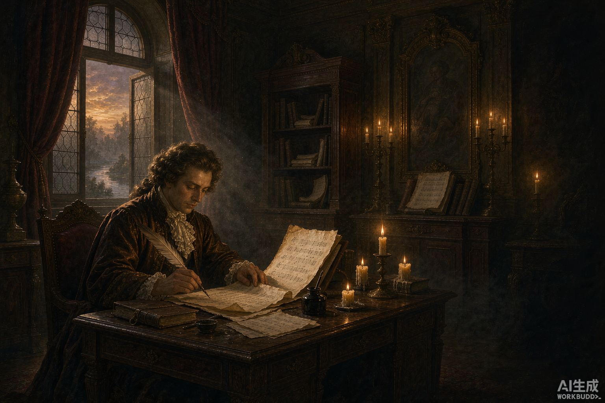
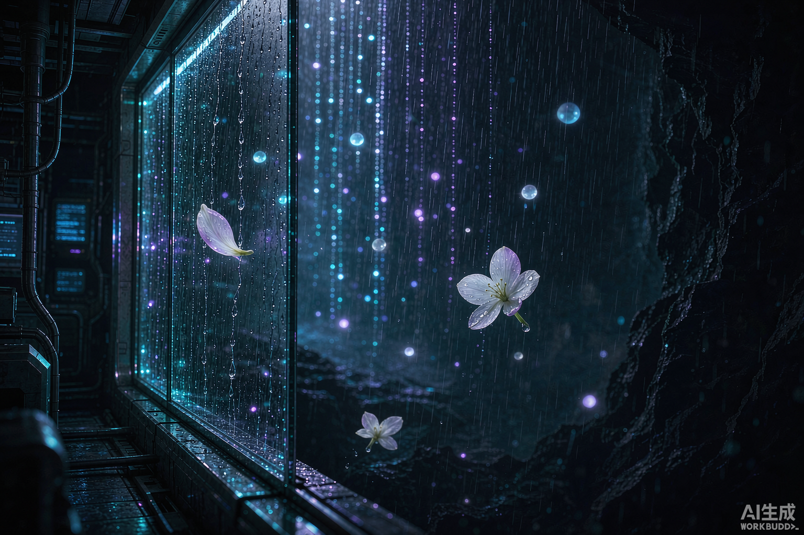
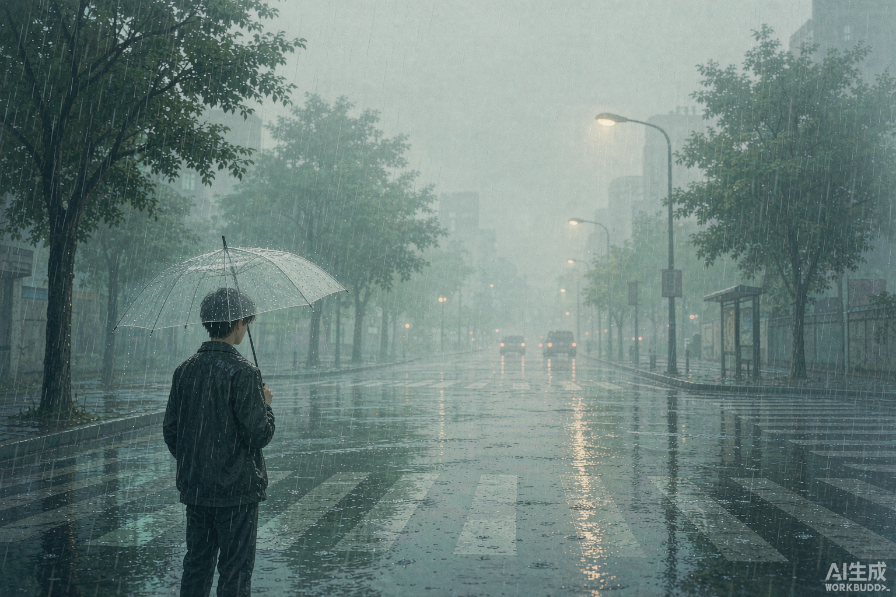
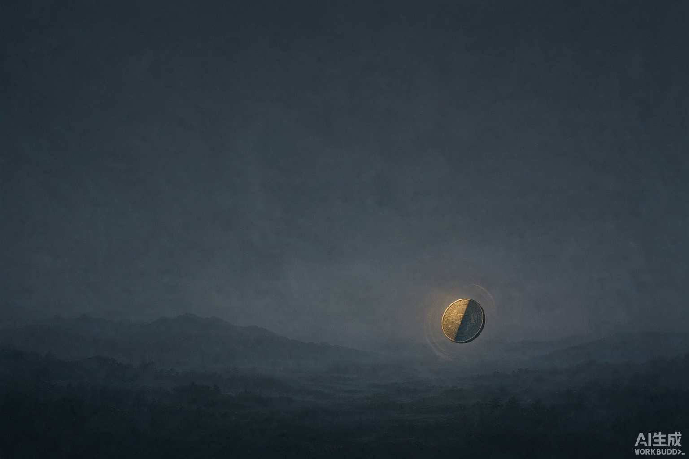

巴赫旧约Bach
河谷吹来的风裹着赫瑟尔河的潮气，钻过克滕宫居室的木窗，拂过摊开在案上的羊皮纸。巴赫垂首坐着，鹅毛笔悬在纸面上方，迟迟没有落下。那些被硬生生按住的眼泪，不曾划过面颊，不曾打湿稿纸，却向内浸透了他全部的乐思。
2,000 字
// 01 — Technology · github.com/TommyDucx
从联邦学习到实时棋盘识别，仓库记录了一条「做小实验、提出更好的问题」的路径。 小数据集、波动结果和局限性，都是记录的一部分。
MLForTommy：面向零基础学习者的机器学习 + 联邦学习仿真框架，含 Iris、MNIST、iWildCam、乳腺癌分类实验，单机 92.12% vs 联邦 88.58%。
基于 LLM 与联邦多模态学习的自循环野生动物识别框架，让模型在数据不出域的前提下持续进化。
联邦学习算法实验库：两小时内跑通主流个性化联邦学习算法，作为学习与复现的底座。Fork
广告算法大赛方案：初赛 top1、复赛 top17，最终获得统一模块创新奖。Fork
macOS 上的实时屏幕围棋棋盘识别 + 引擎着法分析，看棋、复盘两不误。
围棋（KataGo）与国际象棋（Stockfish）的 AI 下一步推荐系统。
批量下载高品质 FLAC 音乐，自动内嵌完整元数据与歌词（多音源），并附带 skill 工作流。
本机全部 AI Agent 技能汇总（WorkBuddy 41 + Codex 18 + Codex 系统 6），含全量索引与同步脚本。
高中跨学科专业术语积累：格物致知、破窗效应、认知失调、议程设置……把模糊的概念一个个讲清楚。
GitHub 个人简介仓库：研究与项目展示，也是这个主页的源头。
// 02 — Music · Logic Pro · 制作中
正在用 Logic Pro 学习编曲与声音设计。还没有成型的作品， 下面是把想法变成声音的实验档案——它们会随着作品完成持续更新。
本地 CPU 运行 facebook/musicgen-small，用 jazzy hip-hop、lofi、Rhodes 电钢、88 BPM 的提示词生成约 20 秒纯音乐。
用 ABC 记谱写下主题旋律，再以 FM 合成渲染成音频：F 小调、82 BPM。目前唯一一段可以听的 demo。
88 BPM、带 swing 的鼓组与分轨编曲，用 Pedalboard 效果链做 lo-fi 母带处理，向喜欢的制作人靠近一步。
后续计划：在 Logic Pro 中完成第一首完整作品，并把成品与制作笔记更新到这里。
// 03 — Literature · 手稿与同窗
我发表了两篇作品《巴赫旧约》与《茉莉雨》；另外两篇是我很赞赏的同窗之作—— 《薄荷雨》与《悬置的黄昏》，经作者同意一并放在这里。

河谷吹来的风裹着赫瑟尔河的潮气，钻过克滕宫居室的木窗，拂过摊开在案上的羊皮纸。巴赫垂首坐着，鹅毛笔悬在纸面上方，迟迟没有落下。那些被硬生生按住的眼泪，不曾划过面颊，不曾打湿稿纸，却向内浸透了他全部的乐思。

今天下雨。她在地下八千米处，借我的眼睛看了十分钟。在这个什么都能明码标价的时代，记忆本就是最廉价的耗材。只是我没想到，有一天我会愿意，把所有和茉莉雨有关的碎片，都换给八千米底下的一个人。

“曾经沧海难为水，除却巫山不是云。”我没有见过沧海，也没有见过巫山的云，我只见过他。可就那一眼，就成了执念。她的喜欢只属于那年春天，青春总是喜欢烂尾在雨季。

这是一种难以名状的倦怠，如梅雨时节黏稠的空气，无声地浸润着存在的每一道缝隙。岁月是生命投掷出的硬币，而那悬置的、不断旋转的第三面，才是我们真正的栖身之所。
// 04 — Transmission
如果你想交流项目、音乐或文字，欢迎来 GitHub 找我。 做小实验，提出更好的问题，把学到的东西讲清楚。